import numpy as np
import pandas as pd
import matplotlib.pyplot as plt
from matplotlib import animation
# torch
import torch
import torch.nn.functional as F
import torch_geometric_temporal
from torch_geometric_temporal.nn.recurrent import GConvGRU
# scipy
from scipy.interpolate import interp1d
# utils
import copy
import time
import pickle
import itertools
from tqdm import tqdm
import warnings
# rpy2
import rpy2
import rpy2.robjects as ro
from rpy2.robjects.vectors import FloatVector
import rpy2.robjects as robjects
from rpy2.robjects.packages import importr
import rpy2.robjects.numpy2ri as rpynedit
import
class RecurrentGCN(torch.nn.Module):
def __init__(self, node_features, filters):
super(RecurrentGCN, self).__init__()
self.recurrent = GConvGRU(node_features, filters, 2)
self.linear = torch.nn.Linear(filters, 1)
def forward(self, x, edge_index, edge_weight):
h = self.recurrent(x, edge_index, edge_weight)
h = F.relu(h)
h = self.linear(h)
return hpre-defined
def load_data(fname):
with open(fname, 'rb') as outfile:
data_dict = pickle.load(outfile)
return data_dictdef save_data(data_dict,fname):
with open(fname,'wb') as outfile:
pickle.dump(data_dict,outfile)def plot(f,*args,t=None,h=2.5,**kwargs):
T,N = f.shape
if t is None: t = range(T)
fig = plt.figure()
ax = fig.subplots(N,1)
for n in range(N):
ax[n].plot(t,f[:,n],*args,**kwargs)
ax[n].set_title('node='+str(n))
fig.set_figheight(N*h)
fig.tight_layout()
plt.close()
return figdef plot_add(fig,f,*args,t=None,**kwargs):
T = f.shape[0]
N = f.shape[1]
if t is None: t = range(T)
ax = fig.get_axes()
for n in range(N):
ax[n].plot(t,f[:,n],*args,**kwargs)
return figdef make_Psi(T):
W = np.zeros((T,T))
for i in range(T):
for j in range(T):
if i==j :
W[i,j] = 0
elif np.abs(i-j) <= 1 :
W[i,j] = 1
d = np.array(W.sum(axis=1))
D = np.diag(d)
L = np.array(np.diag(1/np.sqrt(d)) @ (D-W) @ np.diag(1/np.sqrt(d)))
lamb, Psi = np.linalg.eigh(L)
return Psiebayesthresh = importr('EbayesThresh').ebayesthreshdef trim(f):
f = np.array(f)
if len(f.shape)==1: f = f.reshape(-1,1)
T,N = f.shape
Psi = make_Psi(T)
fbar = Psi.T @ f # apply dft
fbar_threshed = np.stack([ebayesthresh(FloatVector(fbar[:,i])) for i in range(N)],axis=1)
fhat = Psi @ fbar_threshed # inverse dft
return fhatdef update_from_freq_domain(signal, missing_index):
signal = np.array(signal)
T,N = signal.shape
signal_trimed = trim(signal)
for i in range(N):
try:
signal[missing_index[i],i] = signal_trimed[missing_index[i],i]
except:
pass
return signalclass DatasetLoader(object):
def __init__(self,data_dict):
self._dataset = data_dict
def _get_edges(self):
self._edges = np.array(self._dataset["edges"]).T
def _get_edge_weights(self):
self._edge_weights = np.ones(self._edges.shape[1])
def _get_targets_and_features(self):
stacked_target = np.array(self._dataset["FX"])
self.features = [
stacked_target[i : i + self.lags, :].T
for i in range(stacked_target.shape[0] - self.lags)
]
self.targets = [
stacked_target[i + self.lags, :].T
for i in range(stacked_target.shape[0] - self.lags)
]
def get_dataset(self, lags: int = 4) -> torch_geometric_temporal.signal.StaticGraphTemporalSignal:
"""Returning the Chickenpox Hungary data iterator.
Args types:
* **lags** *(int)* - The number of time lags.
Return types:
* **dataset** *(torch_geometric_temporal.signal.StaticGraphTemporalSignal)* - The Chickenpox Hungary dataset.
"""
self.lags = lags
self._get_edges()
self._get_edge_weights()
self._get_targets_and_features()
dataset = torch_geometric_temporal.signal.StaticGraphTemporalSignal(
self._edges, self._edge_weights, self.features, self.targets
)
return datasetdef _convert_train_dataset(train_dataset):
lags = torch.tensor(train_dataset.features).shape[-1]
f = torch.concat([train_dataset[0].x.T,torch.tensor(train_dataset.targets)],axis=0).numpy()
return f,lags def miss(train_dataset,rm,mtype):
f,lags = _convert_train_dataset(train_dataset)
T,N = f.shape
if type(rm) is float:
missing_count = int(np.round(rm*T,0))
mindex = [np.sort(np.random.choice(range(T),missing_count,replace=False)).tolist() for i in range(N)]
elif type(rm) is list:
mindex = rm
for i,m in enumerate(mindex):
f[m,i] = np.nan
data_dict = {
'edges':train_dataset.edge_index.T.tolist(),
'node_ids':{'node'+str(i):i for i in range(N)},
'FX':f.tolist()
}
train_dataset = DatasetLoader(data_dict).get_dataset(lags=lags)
train_dataset.mindex = mindex
train_dataset.mrate_eachnode = [len(mx)/T for mx in mindex]
train_dataset.mrate_total= float(np.sum([len(mx) for mx in train_dataset.mindex])/(N*T))
train_dataset.mtype= mtype
return train_dataset# def miss_rand(train_dataset,missing_ratio=0.5):
# f,lags = _convert_train_dataset(train_dataset)
# T,N = f.shape
# missing_count = int(np.round(missing_ratio*T,0))
# mindex = [np.sort(np.random.choice(range(T),missing_count,replace=False)).tolist() for i in range(N)]
# for i,m in enumerate(mindex):
# f[m,i] = np.nan
# data_dict = {
# 'edges':train_dataset.edge_index.T.tolist(),
# 'node_ids':{'node'+str(i):i for i in range(N)},
# 'FX':f.tolist()
# }
# train_dataset = DatasetLoader(data_dict).get_dataset(lags=lags)
# train_dataset.mindex = mindex
# train_dataset.mrate_eachnode = [len(mx)/T for mx in mindex]
# train_dataset.mrate_total= float(np.sum([len(mx) for mx in train_dataset.mindex])/(N*T))
# train_dataset.mtype= 'rand'
# return train_datasetdef padding(train_dataset_miss,*args,interpolation_method='linear',**kwargs):
mindex = train_dataset_miss.mindex
f,lags = _convert_train_dataset(train_dataset_miss)
T,N = f.shape
FX = pd.DataFrame(f).interpolate(method=interpolation_method,axis=0,*args,**kwargs).fillna(method='bfill').fillna(method='ffill').to_numpy().tolist()
data_dict = {
'edges':train_dataset_miss.edge_index.T.tolist(),
'node_ids':{'node'+str(i):i for i in range(N)},
'FX':FX
}
train_dataset_padded = DatasetLoader(data_dict).get_dataset(lags=lags)
train_dataset_padded.mindex = mindex
train_dataset_padded.mrate_eachnode = train_dataset_miss.mrate_eachnode
train_dataset_padded.mrate_total = train_dataset_miss.mrate_total
train_dataset_padded.mtype= train_dataset_miss.mtype
train_dataset_padded.interpolation_method = interpolation_method
return train_dataset_paddedclass StgcnLearner:
def __init__(self,train_dataset,dataset_name = None):
self.train_dataset = train_dataset
self.lags = torch.tensor(train_dataset.features).shape[-1]
self.dataset_name = str(train_dataset) if dataset_name is None else dataset_name
self.mindex= getattr(self.train_dataset,'mindex',None)
self.mrate_eachnode = getattr(self.train_dataset,'mrate_eachnode',0)
self.mrate_total = getattr(self.train_dataset,'mrate_total',0)
self.mtype = getattr(self.train_dataset,'mtype',None)
self.interpolation_method = getattr(self.train_dataset,'interpolation_method',None)
self.method = 'STGCN'
def learn(self,filters=32,epoch=50):
self.model = RecurrentGCN(node_features=self.lags, filters=filters)
self.optimizer = torch.optim.Adam(self.model.parameters(), lr=0.01)
self.model.train()
for e in range(epoch):
for t, snapshot in enumerate(self.train_dataset):
yt_hat = self.model(snapshot.x, snapshot.edge_index, snapshot.edge_attr)
cost = torch.mean((yt_hat-snapshot.y)**2)
cost.backward()
self.optimizer.step()
self.optimizer.zero_grad()
print('{}/{}'.format(e+1,epoch),end='\r')
# recording HP
self.nof_filters = filters
self.epochs = epoch+1
def __call__(self,dataset):
X = torch.tensor(dataset.features).float()
y = torch.tensor(dataset.targets).float()
yhat = torch.stack([self.model(snapshot.x, snapshot.edge_index, snapshot.edge_attr) for snapshot in dataset]).detach().squeeze().float()
return {'X':X, 'y':y, 'yhat':yhat} class Evaluator:
def __init__(self,learner,train_dataset,test_dataset):
self.learner = learner
# self.learner.model.eval()
try:self.learner.model.eval()
except:pass
self.train_dataset = train_dataset
self.test_dataset = test_dataset
self.lags = lrnr.lags
rslt_tr = self.learner(self.train_dataset)
rslt_test = self.learner(self.test_dataset)
self.X_tr = rslt_tr['X']
self.y_tr = rslt_tr['y']
self.f_tr = torch.concat([self.train_dataset[0].x.T,self.y_tr],axis=0).float()
self.yhat_tr = rslt_tr['yhat']
self.fhat_tr = torch.concat([self.train_dataset[0].x.T,self.yhat_tr],axis=0).float()
self.X_test = rslt_test['X']
self.y_test = rslt_test['y']
self.f_test = self.y_test
self.yhat_test = rslt_test['yhat']
self.fhat_test = self.yhat_test
self.f = torch.concat([self.f_tr,self.f_test],axis=0)
self.fhat = torch.concat([self.fhat_tr,self.fhat_test],axis=0)
def calculate_mse(self):
test_base_mse_eachnode = ((self.y_test - self.y_test.mean(axis=0).reshape(-1,self.y_test.shape[-1]))**2).mean(axis=0).tolist()
test_base_mse_total = ((self.y_test - self.y_test.mean(axis=0).reshape(-1,self.y_test.shape[-1]))**2).mean().item()
train_mse_eachnode = ((self.y_tr-self.yhat_tr)**2).mean(axis=0).tolist()
train_mse_total = ((self.y_tr-self.yhat_tr)**2).mean().item()
test_mse_eachnode = ((self.y_test-self.yhat_test)**2).mean(axis=0).tolist()
test_mse_total = ((self.y_test-self.yhat_test)**2).mean().item()
self.mse = {'train': {'each_node': train_mse_eachnode, 'total': train_mse_total},
'test': {'each_node': test_mse_eachnode, 'total': test_mse_total},
'test(base)': {'each_node': test_base_mse_eachnode, 'total': test_base_mse_total},
}
def _plot(self,*args,t=None,h=2.5,max_node=5,**kwargs):
T,N = self.f.shape
if t is None: t = range(T)
fig = plt.figure()
nof_axs = max(min(N,max_node),2)
if min(N,max_node)<2:
print('max_node should be >=2')
ax = fig.subplots(nof_axs ,1)
for n in range(nof_axs):
ax[n].plot(t,self.f[:,n],color='gray',*args,**kwargs)
ax[n].set_title('node='+str(n))
fig.set_figheight(nof_axs*h)
fig.tight_layout()
plt.close()
return fig
def plot(self,*args,t=None,h=2.5,**kwargs):
self.calculate_mse()
fig = self._plot(*args,t=None,h=2.5,**kwargs)
ax = fig.get_axes()
for i,a in enumerate(ax):
_mse1= self.mse['train']['each_node'][i]
_mse2= self.mse['test']['each_node'][i]
_mse3= self.mse['test(base)']['each_node'][i]
_mrate = lrnr.mrate_eachnode if set(dir(lrnr.mrate_eachnode)) & {'__getitem__'} == set() else lrnr.mrate_eachnode[i]
_title = 'node{0}, mrate: {1:.2f}% \n mse(train) = {2:.2f}, mse(test) = {3:.2f}, mse(test_base) = {4:.2f}'.format(i,_mrate*100,_mse1,_mse2,_mse3)
a.set_title(_title)
_t1 = self.lags
_t2 = self.yhat_tr.shape[0]+self.lags
_t3 = len(self.f)
a.plot(range(_t1,_t2),self.yhat_tr[:,i],label='fitted (train)',color='C0')
a.plot(range(_t2,_t3),self.yhat_test[:,i],label='fitted (test)',color='C1')
a.legend()
_mse1= self.mse['train']['total']
_mse2= self.mse['test']['total']
_mse3= self.mse['test(base)']['total']
_title =\
'dataset: {0} \n method: {1} \n mrate: {2:.2f}% \n interpolation:{3} \n epochs={4} \n number of filters={5} \n lags = {6} \n mse(train) = {7:.2f}, mse(test) = {8:.2f}, mse(test_base) = {9:.2f} \n'.\
format(lrnr.dataset_name,lrnr.method,lrnr.mrate_total*100,lrnr.interpolation_method,lrnr.epochs,lrnr.nof_filters,lrnr.lags,_mse1,_mse2,_mse3)
fig.suptitle(_title)
fig.tight_layout()
return figclass Evaluator:
def __init__(self,learner,train_dataset,test_dataset):
self.learner = learner
self.learner.model.eval()
self.train_dataset = train_dataset
self.test_dataset = test_dataset
self.lags = lrnr.lags
rslt_tr = self.learner(self.train_dataset)
rslt_test = self.learner(self.test_dataset)
self.X_tr = rslt_tr['X']
self.y_tr = rslt_tr['y']
self.f_tr = torch.concat([self.train_dataset[0].x.T,self.y_tr],axis=0).float()
self.yhat_tr = rslt_tr['yhat']
self.fhat_tr = torch.concat([self.train_dataset[0].x.T,self.yhat_tr],axis=0).float()
self.X_test = rslt_test['X']
self.y_test = rslt_test['y']
self.f_test = self.y_test
self.yhat_test = rslt_test['yhat']
self.fhat_test = self.yhat_test
self.f = torch.concat([self.f_tr,self.f_test],axis=0)
self.fhat = torch.concat([self.fhat_tr,self.fhat_test],axis=0)
def calculate_mse(self):
test_base_mse_eachnode = ((self.y_test - self.y_test.mean(axis=0).reshape(-1,self.y_test.shape[-1]))**2).mean(axis=0).tolist()
test_base_mse_total = ((self.y_test - self.y_test.mean(axis=0).reshape(-1,self.y_test.shape[-1]))**2).mean().item()
train_mse_eachnode = ((self.y_tr-self.yhat_tr)**2).mean(axis=0).tolist()
train_mse_total = ((self.y_tr-self.yhat_tr)**2).mean().item()
test_mse_eachnode = ((self.y_test-self.yhat_test)**2).mean(axis=0).tolist()
test_mse_total = ((self.y_test-self.yhat_test)**2).mean().item()
self.mse = {'train': {'each_node': train_mse_eachnode, 'total': train_mse_total},
'test': {'each_node': test_mse_eachnode, 'total': test_mse_total},
'test(base)': {'each_node': test_base_mse_eachnode, 'total': test_base_mse_total},
}
def _plot(self,*args,t=None,h=2.5,max_node=5,**kwargs):
T,N = self.f.shape
if t is None: t = range(T)
fig = plt.figure()
nof_axs = max(min(N,max_node),2)
if min(N,max_node)<2:
print('max_node should be >=2')
ax = fig.subplots(nof_axs ,1)
for n in range(nof_axs):
ax[n].plot(t,self.f[:,n],color='gray',*args,**kwargs)
ax[n].set_title('node='+str(n))
fig.set_figheight(nof_axs*h)
fig.tight_layout()
plt.close()
return fig
def plot(self,*args,t=None,h=2.5,**kwargs):
self.calculate_mse()
fig = self._plot(*args,t=None,h=2.5,**kwargs)
ax = fig.get_axes()
for i,a in enumerate(ax):
_mse1= self.mse['train']['each_node'][i]
_mse2= self.mse['test']['each_node'][i]
_mse3= self.mse['test(base)']['each_node'][i]
_mrate = lrnr.mrate_eachnode if set(dir(lrnr.mrate_eachnode)) & {'__getitem__'} == set() else lrnr.mrate_eachnode[i]
_title = 'node{0}, mrate: {1:.2f}% \n mse(train) = {2:.2f}, mse(test) = {3:.2f}, mse(test_base) = {4:.2f}'.format(i,_mrate*100,_mse1,_mse2,_mse3)
a.set_title(_title)
_t1 = self.lags
_t2 = self.yhat_tr.shape[0]+self.lags
_t3 = len(self.f)
a.plot(range(_t1,_t2),self.yhat_tr[:,i],label='fitted (train)',color='C0')
a.plot(range(_t2,_t3),self.yhat_test[:,i],label='fitted (test)',color='C1')
a.legend()
_mse1= self.mse['train']['total']
_mse2= self.mse['test']['total']
_mse3= self.mse['test(base)']['total']
_title =\
'dataset: {0} \n method: {1} \n mrate: {2:.2f}% \n interpolation:{3} \n epochs={4} \n number of filters={5} \n lags = {6} \n mse(train) = {7:.2f}, mse(test) = {8:.2f}, mse(test_base) = {9:.2f} \n'.\
format(lrnr.dataset_name,lrnr.method,lrnr.mrate_total*100,lrnr.interpolation_method,lrnr.epochs,lrnr.nof_filters,lrnr.lags,_mse1,_mse2,_mse3)
fig.suptitle(_title)
fig.tight_layout()
return figclass ITStgcnLearner(StgcnLearner):
def __init__(self,train_dataset,dataset_name = None):
super().__init__(train_dataset)
self.method = 'IT-STGCN'
def learn(self,filters=32,epoch=50):
self.model = RecurrentGCN(node_features=self.lags, filters=filters)
self.optimizer = torch.optim.Adam(self.model.parameters(), lr=0.01)
self.model.train()
train_dataset_temp = copy.copy(self.train_dataset)
for e in range(epoch):
f,lags = _convert_train_dataset(train_dataset_temp)
f = update_from_freq_domain(f,self.mindex)
T,N = f.shape
data_dict_temp = {
'edges':self.train_dataset.edge_index.T.tolist(),
'node_ids':{'node'+str(i):i for i in range(N)},
'FX':f
}
train_dataset_temp = DatasetLoader(data_dict_temp).get_dataset(lags=self.lags)
for t, snapshot in enumerate(train_dataset_temp):
yt_hat = self.model(snapshot.x, snapshot.edge_index, snapshot.edge_attr)
cost = torch.mean((yt_hat-snapshot.y)**2)
cost.backward()
self.optimizer.step()
self.optimizer.zero_grad()
print('{}/{}'.format(e+1,epoch),end='\r')
# record
self.nof_filters = filters
self.epochs = epoch+1class GNARLearner(StgcnLearner):
def __init__(self,train_dataset,dataset_name = None):
super().__init__(train_dataset)
self.method = 'GNAR'
def learn(self):
self.N = np.array(train_dataset.features).shape[1]
w=np.zeros((self.N,self.N))
for k in range(len(train_dataset.edge_index[0])):
w[train_dataset.edge_index[0][k],train_dataset.edge_index[1][k]] = 1
self.m = robjects.r.matrix(FloatVector(w), nrow = self.N, ncol = self.N)
_vts = robjects.r.matrix(
rpyn.numpy2rpy(np.array(train_dataset.features).reshape(-1,1).squeeze()),
nrow = np.array(train_dataset.targets).shape[0] + self.lags,
ncol = self.N
)
self.fit = GNAR.GNARfit(vts=_vts,net = GNAR.matrixtoGNAR(self.m), alphaOrder = self.lags, betaOrder = FloatVector([1]*self.lags))
self.nof_filters = None
self.epochs = None
def __call__(self,dataset,mode='fit',n_ahead=1):
r_code = '''
substitute<-function(lrnr_fit1,lrnr_fit2){
lrnr_fit1$mod$coef = lrnr_fit2$mod$coef
return(lrnr_fit1)
}
'''
ro.r(r_code)
substitute=ro.globalenv['substitute']
_vts = robjects.r.matrix(
rpyn.numpy2rpy(np.array(dataset.features).reshape(-1,1).squeeze()),
nrow = np.array(dataset.targets).shape[0] + self.lags,
ncol = self.N
)
self._fit = GNAR.GNARfit(vts = _vts, net = GNAR.matrixtoGNAR(self.m), alphaOrder = self.lags, betaOrder = FloatVector([1]*self.lags))
self._fit = substitute(self._fit,self.fit)
X = torch.tensor(dataset.features).float()
y = torch.tensor(dataset.targets).float()
if mode == 'fit':
X = np.array(dataset.features)
yhat = GNAR.fitted_GNARfit(self._fit,ro.FloatVector(X))
X = torch.tensor(X).float()
yhat = torch.tensor(np.array(yhat)).float()
elif mode == 'fore':
yhat = GNAR.predict_GNARfit(self.fit,n_ahead=n_ahead)
yhat = torch.tensor(np.array(yhat)).float()
else:
print('mode should be "fit" or "fore"')
return {'X':X, 'y':y, 'yhat':yhat} # class SimulationPlanner:
# def __init__(self,plans,loader,dataset_name=None,simulation_results=None):
# self.plans = plans
# col = ['dataset', 'method', 'mrate', 'mtype', 'lags', 'nof_filters', 'inter_method', 'epoch', 'mse']
# self.product_iterator = itertools.product(
# plans['method'],
# plans['mrate'],
# plans['mtype'],
# plans['lags'],
# plans['nof_filters'],
# plans['inter_method'],
# plans['epoch']
# )
# self.loader = loader
# self.dataset_name = dataset_name
# self.simulation_results = pd.DataFrame(columns=col) if simulation_results is None else simulation_results
# def _simulate_STGCN(self):
# for prod_itor in self.product_iterator:
# method,mrate,mtype,lags,nof_filters,inter_method,epoch = prod_itor
# self.dataset = self.loader.get_dataset(lags=lags)
# train_dataset, test_dataset = torch_geometric_temporal.signal.temporal_signal_split(self.dataset, train_ratio=0.8)
# if mrate >0:
# if mtype == 'rand':
# train_dataset = padding(miss_rand(train_dataset,missing_ratio=mrate),interpolation_method=inter_method)
# elif mtype == 'block':
# pass
# lrnr = StgcnLearner(train_dataset,dataset_name=self.dataset_name)
# lrnr.learn(filters=nof_filters,epoch=epoch)
# evtor = Evaluator(lrnr,train_dataset,test_dataset)
# evtor.calculate_mse()
# mse = evtor.mse['test']['total']
# self._record(*prod_itor,mse)
# def _record(self,method,mrate,mtype,lag,nof_filter,inter_method,epoch,mse):
# dct = {'dataset': self.dataset_name,
# 'method': method,
# 'mrate': mrate,
# 'mtype': mtype,
# 'lags': lag,
# 'nof_filters': nof_filter,
# 'inter_method': inter_method,
# 'epoch': epoch,
# 'mse': mse
# }
# simulation_result_new = pd.Series(dct).to_frame().transpose()
# self.simulation_results = pd.concat([self.simulation_results,simulation_result_new])class SimulationPlanner:
def __init__(self,plans,loader,dataset_name=None,simulation_results=None):
self.plans = plans
col = ['dataset', 'method', 'mrate', 'mtype', 'lags', 'nof_filters', 'inter_method', 'epoch', 'mse']
self.product_iterator = itertools.product(
plans['method'],
plans['mrate'],
plans['mtype'],
plans['lags'],
plans['nof_filters'],
plans['inter_method'],
plans['epoch']
)
self.loader = loader
self.dataset_name = dataset_name
self.simulation_results = pd.DataFrame(columns=col) if simulation_results is None else simulation_results
def _simulate_STGCN(self):
for prod_itor in self.product_iterator:
method,mrate,mtype,lags,nof_filters,inter_method,epoch = prod_itor
self.dataset = self.loader.get_dataset(lags=lags)
train_dataset, test_dataset = torch_geometric_temporal.signal.temporal_signal_split(self.dataset, train_ratio=0.8)
if mrate >0:
if mtype == 'rand':
train_dataset = padding(train_dataset_miss = miss(train_dataset,rm=0.5,mtype='rand'),interpolation_method=inter_method)
elif mtype == 'block':
train_dataset = padding(train_dataset_miss = miss(train_dataset,rm=[list(range(10,100)),[],list(range(50,80)),[],[]],mtype='block'),interpolation_method=inter_method)
lrnr = StgcnLearner(train_dataset,dataset_name=self.dataset_name)
lrnr.learn(filters=nof_filters,epoch=epoch)
evtor = Evaluator(lrnr,train_dataset,test_dataset)
evtor.calculate_mse()
mse = evtor.mse['test']['total']
self._record(*prod_itor,mse)
def _record(self,method,mrate,mtype,lag,nof_filter,inter_method,epoch,mse):
dct = {'dataset': self.dataset_name,
'method': method,
'mrate': mrate,
'mtype': mtype,
'lags': lag,
'nof_filters': nof_filter,
'inter_method': inter_method,
'epoch': epoch,
'mse': mse
}
simulation_result_new = pd.Series(dct).to_frame().transpose()
self.simulation_results = pd.concat([self.simulation_results,simulation_result_new]).reset_index().iloc[:,1:]From R
%load_ext rpy2.ipython%%R
library(GNAR)
library(igraph)
library(zoo)R[write to console]: Loading required package: igraph
R[write to console]:
Attaching package: ‘igraph’
R[write to console]: The following objects are masked from ‘package:stats’:
decompose, spectrum
R[write to console]: The following object is masked from ‘package:base’:
union
R[write to console]: Loading required package: wordcloud
R[write to console]: Loading required package: RColorBrewer
R[write to console]:
Attaching package: ‘zoo’
R[write to console]: The following objects are masked from ‘package:base’:
as.Date, as.Date.numeric
%%R
fiveNet_m <- as.matrix(fiveNet)%R -o fiveNet_mGNAR = importr('GNAR') # import GNAR
igraph = importr('igraph') # import igraph 예제1: vanilla STGCN
- 데이터
_data = load_data('./data/fivenodes.pkl')_edges = torch.tensor(_data['edges']).nonzero().tolist()
_FX = _data['f'].tolist()
_node_ids = {'node1':0, 'node2':1, 'node3':2, 'node4':3, 'node5':4} data_dict = {'edges':_edges, 'node_ids':_node_ids, 'FX':_FX}loader = DatasetLoader(data_dict)
dataset = loader.get_dataset(lags=2)
train_dataset, test_dataset = torch_geometric_temporal.signal.temporal_signal_split(dataset, train_ratio=0.8)- 학습
lrnr = StgcnLearner(train_dataset,dataset_name='five_nodes')/tmp/ipykernel_3881692/3087935251.py:4: UserWarning: Creating a tensor from a list of numpy.ndarrays is extremely slow. Please consider converting the list to a single numpy.ndarray with numpy.array() before converting to a tensor. (Triggered internally at /opt/conda/conda-bld/pytorch_1639180588308/work/torch/csrc/utils/tensor_new.cpp:201.)
self.lags = torch.tensor(train_dataset.features).shape[-1]lrnr.learn(filters=4,epoch=50)50/50- 적합값
# lrnr(train_dataset)
# lrnr(test_dataset)- 실행하면 X,y,yhat 출력
- 모형 평가 및 시각화
baseline
torch.tensor(test_dataset.targets).shapetorch.Size([40, 5])((torch.tensor(test_dataset.targets)- torch.tensor(test_dataset.targets).mean(axis=0).reshape(-1,5))**2).mean()tensor(1.2525, dtype=torch.float64)test MSE는 1.2525 보다는 무조건 낮아야함!! 아니라면 모형을 잘못 돌린거
evtor = Evaluator(lrnr,train_dataset,test_dataset)fig = evtor.plot('--.',h=5,max_node=3,label='complete data',alpha=0.5)
fig.set_figwidth(12)
fig.tight_layout()
fig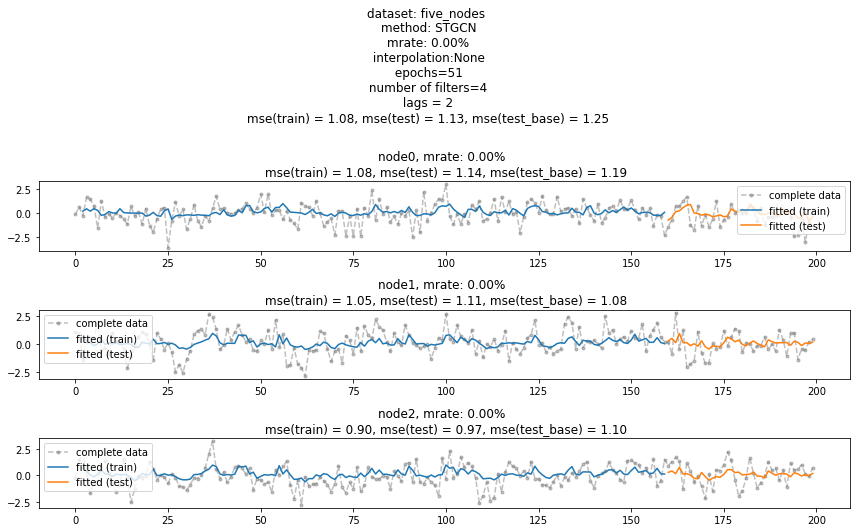
예제2: padding missing values
- 데이터
# _data = load_data('./data/fivenodes.pkl')
# _edges = torch.tensor(_data['edges']).nonzero().tolist()
# _FX = _data['f'].tolist()
# _node_ids = {'node1':0, 'node2':1, 'node3':2, 'node4':3, 'node5':4}
data_dict = {'edges':_edges, 'node_ids':_node_ids, 'FX':_FX}loader = DatasetLoader(data_dict)
dataset = loader.get_dataset(lags=2)
train_dataset, test_dataset = torch_geometric_temporal.signal.temporal_signal_split(dataset, train_ratio=0.8)- 임의로 결측치 발생
train_dataset_miss = miss(train_dataset,rm=0.5,mtype='rand')fig = plot(torch.tensor(train_dataset_miss.targets),'o')
fig 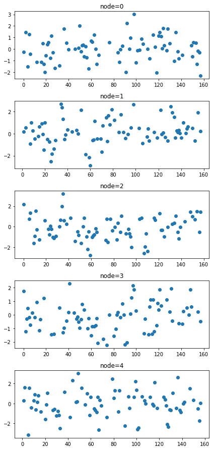
- 적절한 method로 결측치를 채움 (default 는 linear)
train_dataset_padded = padding(train_dataset_miss) # padding(train_dataset_miss,method='linear'와 같음)fig = plot(torch.tensor(train_dataset_miss.targets),'o')
plot_add(fig,torch.tensor(train_dataset_padded.targets),'--x',color='C1',alpha=0.5)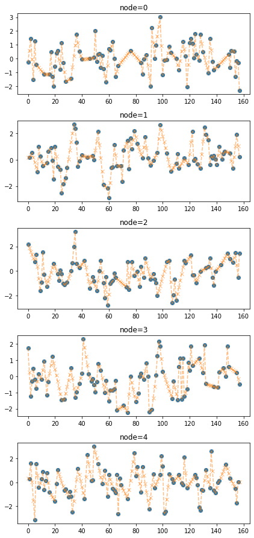
다른 method로 결측치를 채울수도 있음. 사용할 수 있는 방법들은 아래에 정리되어 있음
train_dataset_padded2 = padding(train_dataset_miss,interpolation_method='nearest')fig = plot(torch.tensor(train_dataset_miss.targets),'o')
plot_add(fig,torch.tensor(train_dataset_padded2.targets),'--x',color='C1',alpha=0.5)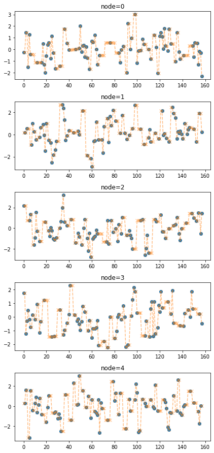
train_dataset_padded3 = padding(train_dataset_miss,interpolation_method='quadratic')fig = plot(torch.tensor(train_dataset_miss.targets),'o')
plot_add(fig,torch.tensor(train_dataset_padded3.targets),'--x',color='C1',alpha=0.5)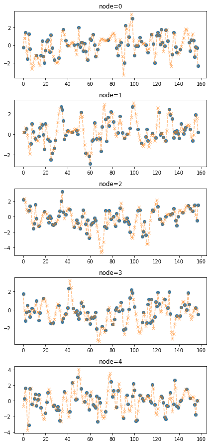
train_dataset_padded4 = padding(train_dataset_miss,interpolation_method='cubic')fig = plot(torch.tensor(train_dataset_miss.targets),'o')
plot_add(fig,torch.tensor(train_dataset_padded4.targets),'--x',color='C1',alpha=0.5)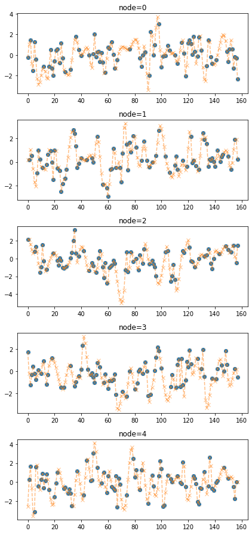
- 블락으로 결측치 발생
train_dataset_miss = miss(train_dataset,rm=[list(range(10,100)),[],list(range(50,80)),[],[]],mtype='block')fig = plot(torch.tensor(train_dataset_miss.targets),'o')
fig 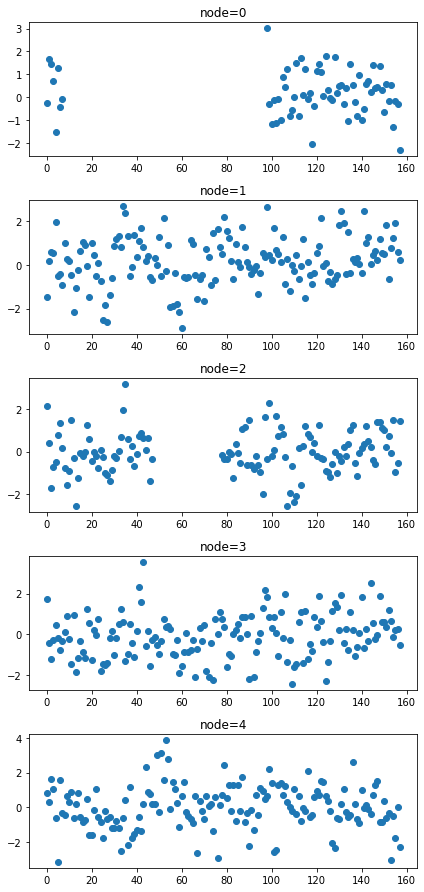
예제3-1: vanilla STGCN with random missing
- data
# _data = load_data('./data/fivenodes.pkl')
# _edges = torch.tensor(_data['edges']).nonzero().tolist()
# _FX = _data['f'].tolist()
# _node_ids = {'node1':0, 'node2':1, 'node3':2, 'node4':3, 'node5':4}
data_dict = {'edges':_edges, 'node_ids':_node_ids, 'FX':_FX}loader = DatasetLoader(data_dict)
dataset = loader.get_dataset(lags=2)
train_dataset, test_dataset = torch_geometric_temporal.signal.temporal_signal_split(dataset, train_ratio=0.8)# train_dataset_miss = miss(train_dataset,rm=[list(range(10,100)),[],list(range(50,80)),[],[]],mtype='block')
train_dataset_miss = miss(train_dataset,rm=0.5,mtype='rand')
train_dataset_padded = padding(train_dataset_miss) # padding(train_dataset_miss,method='linear'와 같음)- 학습
lrnr = StgcnLearner(train_dataset_padded)lrnr.learn(filters=4,epoch=50)50/50- 적합값
#lrnr(train_dataset_padded)
#lrnr(test_dataset)- 실행하면 X,y,yhat 출력
- 모형 평가 및 시각화
evtor = Evaluator(lrnr,train_dataset_padded,test_dataset)fig = evtor.plot('--.',h=5,max_node=5,label='complete data',alpha=0.5) # max_nodes 는 1보다 커야함
fig.set_figwidth(12)
fig.tight_layout()
fig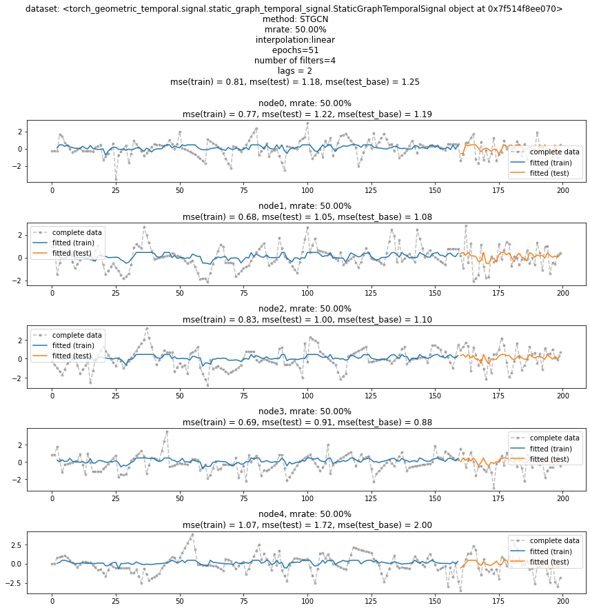
예제3-2: vanilla STGCN with block missing
- data
# _data = load_data('./data/fivenodes.pkl')
# _edges = torch.tensor(_data['edges']).nonzero().tolist()
# _FX = _data['f'].tolist()
# _node_ids = {'node1':0, 'node2':1, 'node3':2, 'node4':3, 'node5':4}
data_dict = {'edges':_edges, 'node_ids':_node_ids, 'FX':_FX}loader = DatasetLoader(data_dict)
dataset = loader.get_dataset(lags=2)
train_dataset, test_dataset = torch_geometric_temporal.signal.temporal_signal_split(dataset, train_ratio=0.8)train_dataset_miss = miss(train_dataset,rm=[list(range(10,100)),[],list(range(50,80)),[],[]],mtype='block')
train_dataset_padded = padding(train_dataset_miss) # padding(train_dataset_miss,method='linear'와 같음)- 학습
lrnr = StgcnLearner(train_dataset_padded)lrnr.learn(filters=4,epoch=50)50/50- 적합값
#lrnr(train_dataset_padded)
#lrnr(test_dataset)- 실행하면 X,y,yhat 출력
- 모형 평가 및 시각화
evtor = Evaluator(lrnr,train_dataset_padded,test_dataset)fig = evtor.plot('--.',h=5,max_node=5,label='complete data',alpha=0.5) # max_nodes 는 1보다 커야함
fig.set_figwidth(12)
fig.tight_layout()
fig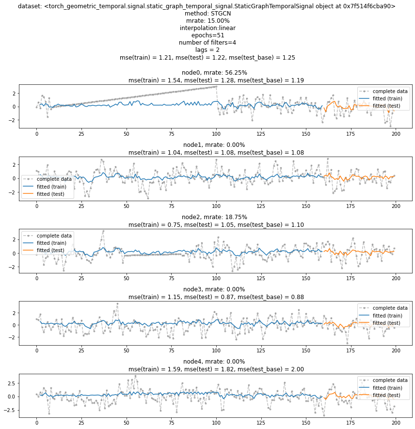
예제4-1: threshold example (random)
- data
# _data = load_data('./data/fivenodes.pkl')
# _edges = torch.tensor(_data['edges']).nonzero().tolist()
# _FX = _data['f'].tolist()
# _node_ids = {'node1':0, 'node2':1, 'node3':2, 'node4':3, 'node5':4}
data_dict = {'edges':_edges, 'node_ids':_node_ids, 'FX':_FX}loader = DatasetLoader(data_dict)
dataset = loader.get_dataset(lags=2)
train_dataset, test_dataset = torch_geometric_temporal.signal.temporal_signal_split(dataset, train_ratio=0.8)- 결측치 발생 및 패딩
train_dataset_miss = miss(train_dataset,rm=0.5,mtype='rand')
train_dataset_padded = padding(train_dataset_miss)f_miss,_ = _convert_train_dataset(train_dataset_miss)
f_padded,_ = _convert_train_dataset(train_dataset_padded)fig = plot(f_miss,'o')
plot_add(fig,f_padded,'--x',alpha=0.5)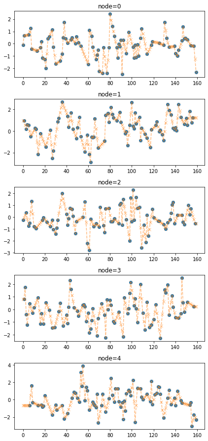
- update by frequency thresholding
fig = plot(f_miss,'o',alpha=0.5)
plot_add(fig,f_padded,'--x',alpha=0.5)
f_updated = update_from_freq_domain(f_padded,train_dataset_padded.mindex)
plot_add(fig,f_updated,'-')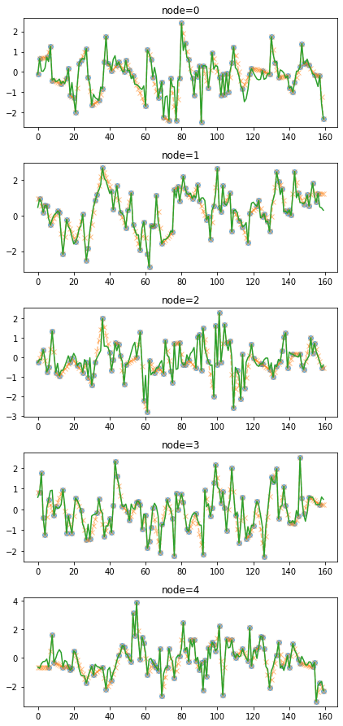
예제4-2: threshold example (block)
- data
# _data = load_data('./data/fivenodes.pkl')
# _edges = torch.tensor(_data['edges']).nonzero().tolist()
# _FX = _data['f'].tolist()
# _node_ids = {'node1':0, 'node2':1, 'node3':2, 'node4':3, 'node5':4}
data_dict = {'edges':_edges, 'node_ids':_node_ids, 'FX':_FX}loader = DatasetLoader(data_dict)
dataset = loader.get_dataset(lags=2)
train_dataset, test_dataset = torch_geometric_temporal.signal.temporal_signal_split(dataset, train_ratio=0.8)- 결측치 발생 및 패딩
train_dataset_miss = miss(train_dataset,rm=[list(range(10,100)),[],list(range(50,80)),[],[]],mtype='block')
train_dataset_padded = padding(train_dataset_miss)f_miss,_ = _convert_train_dataset(train_dataset_miss)
f_padded,_ = _convert_train_dataset(train_dataset_padded)fig = plot(f_miss,'o')
plot_add(fig,f_padded,'--x',alpha=0.5)
- update by frequency thresholding
fig = plot(f_miss,'o',alpha=0.5)
plot_add(fig,f_padded,'--x',alpha=0.5)
f_updated = update_from_freq_domain(f_padded,train_dataset_padded.mindex)
plot_add(fig,f_updated,'-')
예제5-1: iterative thresholded STGCN (IT-STGCN) with random missing
- data
# _data = load_data('./data/fivenodes.pkl')
# _edges = torch.tensor(_data['edges']).nonzero().tolist()
# _FX = _data['f'].tolist()
# _node_ids = {'node1':0, 'node2':1, 'node3':2, 'node4':3, 'node5':4}
data_dict = {'edges':_edges, 'node_ids':_node_ids, 'FX':_FX}loader = DatasetLoader(data_dict)
dataset = loader.get_dataset(lags=2)
train_dataset, test_dataset = torch_geometric_temporal.signal.temporal_signal_split(dataset, train_ratio=0.8)train_dataset_miss = miss(train_dataset,rm=0.5,mtype='rand')
# train_dataset_miss = miss(train_dataset,rm=[list(range(10,100)),[],list(range(50,80)),[],[]],mtype='block')
train_dataset_padded = padding(train_dataset_miss) # padding(train_dataset_miss,method='linear'와 같음)- 학습
lrnr = ITStgcnLearner(train_dataset_padded)lrnr.learn(filters=4,epoch=50)50/50- 적합값
#lrnr(train_dataset_padded)
#lrnr(test_dataset)['yhat'].shape- 실행하면 X,y,yhat 출력
- 모형 평가 및 시각화
evtor = Evaluator(lrnr,train_dataset_padded,test_dataset)fig = evtor.plot('--.',h=5,max_node=3,label='complete data',alpha=0.5) # max_nodes 는 1보다 커야함
fig.set_figwidth(12)
fig.tight_layout()
fig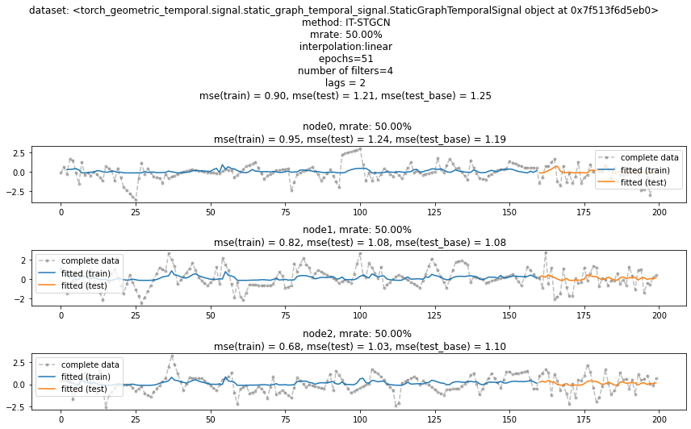
예제5-2: iterative thresholded STGCN (IT-STGCN) with block missing
- data
# _data = load_data('./data/fivenodes.pkl')
# _edges = torch.tensor(_data['edges']).nonzero().tolist()
# _FX = _data['f'].tolist()
# _node_ids = {'node1':0, 'node2':1, 'node3':2, 'node4':3, 'node5':4}
data_dict = {'edges':_edges, 'node_ids':_node_ids, 'FX':_FX}loader = DatasetLoader(data_dict)
dataset = loader.get_dataset(lags=2)
train_dataset, test_dataset = torch_geometric_temporal.signal.temporal_signal_split(dataset, train_ratio=0.8)# train_dataset_miss = miss(train_dataset,rm=0.5,mtype='rand')
train_dataset_miss = miss(train_dataset,rm=[list(range(10,100)),[],list(range(50,80)),[],[]],mtype='block')
train_dataset_padded = padding(train_dataset_miss) # padding(train_dataset_miss,method='linear'와 같음)- 학습
lrnr = ITStgcnLearner(train_dataset_padded)lrnr.learn(filters=4,epoch=50)50/50- 적합값
#lrnr(train_dataset_padded)
#lrnr(test_dataset)['yhat'].shape- 실행하면 X,y,yhat 출력
- 모형 평가 및 시각화
evtor = Evaluator(lrnr,train_dataset_padded,test_dataset)fig = evtor.plot('--.',h=5,max_node=3,label='complete data',alpha=0.5) # max_nodes 는 1보다 커야함
fig.set_figwidth(12)
fig.tight_layout()
fig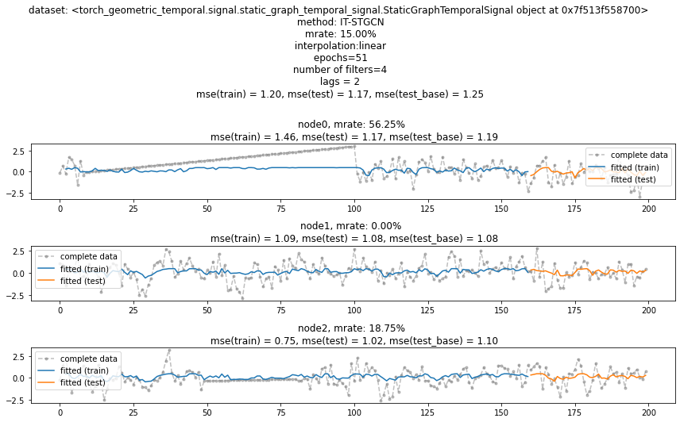
예제6-1: GNAR (random missing)
# _data = load_data('./data/fivenodes.pkl')
# _edges = torch.tensor(_data['edges']).nonzero().tolist()
# _FX = _data['f'].tolist()
# _node_ids = {'node1':0, 'node2':1, 'node3':2, 'node4':3, 'node5':4}
data_dict = {'edges':_edges, 'node_ids':_node_ids, 'FX':_FX}loader = DatasetLoader(data_dict)loader = DatasetLoader(data_dict)
dataset = loader.get_dataset(lags=2)
train_dataset, test_dataset = torch_geometric_temporal.signal.temporal_signal_split(dataset, train_ratio=0.8)train_dataset_miss = miss(train_dataset,rm=0.5,mtype='rand')
# train_dataset_miss = miss(train_dataset,rm=[list(range(10,100)),[],list(range(50,80)),[],[]],mtype='block')
train_dataset_padded = padding(train_dataset_miss) # padding(train_dataset_miss,method='linear'와 같음)- 학습
lrnr = GNARLearner(train_dataset_padded)lrnr.learn()WARNING: diagonal entries present in original matrix, these will be removed- 적합값
#lrnr(train_dataset_padded)
#lrnr(test_dataset)- 실행하면 X,y,yhat 출력
- 모형 평가 및 시각화
evtor = Evaluator(lrnr,train_dataset_padded,test_dataset)WARNING: diagonal entries present in original matrix, these will be removed
WARNING: diagonal entries present in original matrix, these will be removedfig = evtor.plot('--.',h=5,max_node=3,label='complete data',alpha=0.5) # max_nodes 는 1보다 커야함
fig.set_figwidth(12)
fig.tight_layout()
fig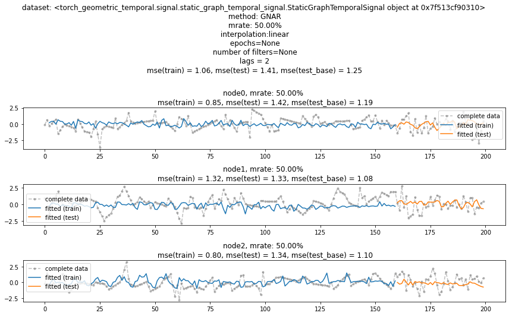
예제6-2: GNAR (block missing)
# _data = load_data('./data/fivenodes.pkl')
# _edges = torch.tensor(_data['edges']).nonzero().tolist()
# _FX = _data['f'].tolist()
# _node_ids = {'node1':0, 'node2':1, 'node3':2, 'node4':3, 'node5':4}
data_dict = {'edges':_edges, 'node_ids':_node_ids, 'FX':_FX}loader = DatasetLoader(data_dict)loader = DatasetLoader(data_dict)
dataset = loader.get_dataset(lags=2)
train_dataset, test_dataset = torch_geometric_temporal.signal.temporal_signal_split(dataset, train_ratio=0.8)# train_dataset_miss = miss(train_dataset,rm=0.5,mtype='rand')
train_dataset_miss = miss(train_dataset,rm=[list(range(10,100)),[],list(range(50,80)),[],[]],mtype='block')
train_dataset_padded = padding(train_dataset_miss) # padding(train_dataset_miss,method='linear'와 같음)- 학습
lrnr = GNARLearner(train_dataset_padded)lrnr.learn()WARNING: diagonal entries present in original matrix, these will be removed- 적합값
#lrnr(train_dataset_padded)
#lrnr(test_dataset)- 실행하면 X,y,yhat 출력
- 모형 평가 및 시각화
evtor = Evaluator(lrnr,train_dataset_padded,test_dataset)WARNING: diagonal entries present in original matrix, these will be removed
WARNING: diagonal entries present in original matrix, these will be removedfig = evtor.plot('--.',h=5,max_node=3,label='complete data',alpha=0.5) # max_nodes 는 1보다 커야함
fig.set_figwidth(12)
fig.tight_layout()
fig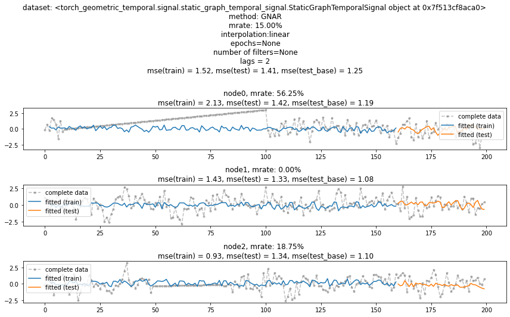
예제7: SimulationPlanner
# _data = load_data('./data/fivenodes.pkl')
# _edges = torch.tensor(_data['edges']).nonzero().tolist()
# _FX = _data['f'].tolist()
# _node_ids = {'node1':0, 'node2':1, 'node3':2, 'node4':3, 'node5':4}
data_dict = {'edges':_edges, 'node_ids':_node_ids, 'FX':_FX}loader = DatasetLoader(data_dict)plans = {
'max_iteration': [50],
'method':['STGCN','IT-STGCN','GNAR'],
'mrate':[0.0,0.2,0.4,0.6,0.8],
'mtype':['rand','block'],
'lags':[2,4,8],
'nof_filters':[16,24],
'inter_method':['nearest','linear'],
'epoch': [1]
}planner = SimulationPlanner(plans,loader,dataset_name='five_nodes')planner._simulate_STGCN()1/1df = planner.simulation_resultsdf| dataset | method | mrate | mtype | lags | nof_filters | inter_method | epoch | mse | |
|---|---|---|---|---|---|---|---|---|---|
| 0 | five_nodes | STGCN | 0.0 | rand | 2 | 16 | nearest | 1 | 1.186918 |
| 1 | five_nodes | STGCN | 0.0 | rand | 2 | 16 | linear | 1 | 1.177989 |
| 2 | five_nodes | STGCN | 0.0 | rand | 2 | 24 | nearest | 1 | 1.219295 |
| 3 | five_nodes | STGCN | 0.0 | rand | 2 | 24 | linear | 1 | 1.182291 |
| 4 | five_nodes | STGCN | 0.0 | rand | 4 | 16 | nearest | 1 | 1.180597 |
| ... | ... | ... | ... | ... | ... | ... | ... | ... | ... |
| 211 | five_nodes | GNAR | 0.4 | block | 4 | 24 | linear | 1 | 1.164896 |
| 212 | five_nodes | GNAR | 0.4 | block | 8 | 16 | nearest | 1 | 1.227386 |
| 213 | five_nodes | GNAR | 0.4 | block | 8 | 16 | linear | 1 | 1.193559 |
| 214 | five_nodes | GNAR | 0.4 | block | 8 | 24 | nearest | 1 | 1.210221 |
| 215 | five_nodes | GNAR | 0.4 | block | 8 | 24 | linear | 1 | 1.176275 |
216 rows × 9 columns
plan2 = {
'max_iteration': [2],
'method':['STGCN','IT-STGCN','GNAR'],
'mrate':[0.0,0.6,0.8],
'mtype':['rand','block'],
'lags':[2],
'nof_filters':[16,24,32],
'inter_method':['nearest'],
'epoch': [1]
}planner2 = SimulationPlanner(plan2,loader,dataset_name='asdf',simulation_results=df)planner2._simulate_STGCN()1/1df2 = planner2.simulation_resultsdf2| dataset | method | mrate | mtype | lags | nof_filters | inter_method | epoch | mse | |
|---|---|---|---|---|---|---|---|---|---|
| 0 | five_nodes | STGCN | 0.0 | rand | 2 | 16 | nearest | 1 | 1.186918 |
| 1 | five_nodes | STGCN | 0.0 | rand | 2 | 16 | linear | 1 | 1.177989 |
| 2 | five_nodes | STGCN | 0.0 | rand | 2 | 24 | nearest | 1 | 1.219295 |
| 3 | five_nodes | STGCN | 0.0 | rand | 2 | 24 | linear | 1 | 1.182291 |
| 4 | five_nodes | STGCN | 0.0 | rand | 4 | 16 | nearest | 1 | 1.180597 |
| ... | ... | ... | ... | ... | ... | ... | ... | ... | ... |
| 265 | asdf | GNAR | 0.8 | rand | 2 | 24 | nearest | 1 | 1.247103 |
| 266 | asdf | GNAR | 0.8 | rand | 2 | 32 | nearest | 1 | 1.139993 |
| 267 | asdf | GNAR | 0.8 | block | 2 | 16 | nearest | 1 | 1.21734 |
| 268 | asdf | GNAR | 0.8 | block | 2 | 24 | nearest | 1 | 1.22945 |
| 269 | asdf | GNAR | 0.8 | block | 2 | 32 | nearest | 1 | 1.272143 |
270 rows × 9 columns
여기부터 서연이코드
edges_tensor = torch.tensor(data['edges'])
fiveVTS = np.array(data['f'])
nonzero_indices = edges_tensor.nonzero()
fiveNet_edge = np.array(nonzero_indices).T
T = 200
N = 5 # number of Nodes
E = fiveNet_edge
V = np.array([1,2,3,4,5])
t = np.arange(0,T)
node_features = 1
edge_index = torch.tensor(E)
edge_attr = torch.tensor(np.array([1,1,1,1,1,1,1,1,1,1]),dtype=torch.float32)edge_indextensor([[0, 0, 1, 1, 2, 2, 3, 3, 3, 4],
[3, 4, 2, 3, 1, 3, 0, 1, 2, 0]])- train / test
fiveVTS_train = fiveVTS[:int(len(fiveVTS)*0.8)]
fiveVTS_test = fiveVTS[int(len(fiveVTS)*0.8):]Random Missing Values
class Missing:
def __init__(self,df):
self.df = df
self.N = N
self.number = []
def miss(self,percent=0.5):
self.missing = self.df.copy()
self.percent = percent
for i in range(self.N):
#self.seed = np.random.choice(1000,1,replace=False)
#np.random.seed(self.seed)
self.number.append(np.random.choice(int(len(self.df))-1,int(len(self.df)*self.percent),replace=False))
self.missing[self.number[i],i] = float('nan')
def first_mean(self):
self.train_mean = self.missing.copy()
for i in range(self.N):
self.train_mean[self.number[i],i] = np.nanmean(self.missing[:,i])
def second_linear(self):
self.train_linear = pd.DataFrame(self.missing)
self.train_linear.interpolate(method='linear', inplace=True)
self.train_linear = self.train_linear.fillna(0)
self.train_linear = np.array(self.train_linear).reshape(int(len(self.df)),N)col = ['Dataset','iteration', 'method', 'missingrate', 'missingtype', 'lag', 'number_of_filters', 'interpolation','MSE_train', 'MSE_test']
rate = [i/10 for i in range(10)]Class code by Method
STGCN
class STGCN_Missing:
def __init__(self,Dataset,df, iterable, Method, Missingrate, Missingtype, lag, Number_of_filters, Interpolation):
self.Dataset = Dataset
self.df = df
self.iterable = iterable
self.Method = Method
self.Missingrate = Missingrate
self.Missingtype = Missingtype
self.lag = lag
self.Number_of_filters = Number_of_filters
self.Interpolation = Interpolation
def iter(self):
self.XX = torch.tensor(fiveVTS_test.reshape(int(T*0.2),N,1)[:-1,:,:]).float()
self.yy = torch.tensor(fiveVTS_test.reshape(int(T*0.2),N,1)[1:,:,:]).float()
self.real_y = torch.tensor(fiveVTS_train).reshape(int(T*0.8),N,1).float()[1:,:,:]
for i in range(self.iterable):
_zero = Missing(fiveVTS_train)
_zero.miss(percent = self.Missingrate)
_zero.second_linear()
missing_index = _zero.number
interpolated_signal = _zero.train_linear
X = torch.tensor(interpolated_signal).reshape(int(T*0.8),N,1).float()[:int(T*0.8-1),:,:]
y = torch.tensor(interpolated_signal).reshape(int(T*0.8),N,1).float()[1:,:,:]
net = RecurrentGCN(node_features=self.lag, filters=self.Number_of_filters)
optimizer = torch.optim.Adam(net.parameters(), lr=0.01)
net.train()
for epoch in range(50):
for time, (xt,yt) in enumerate(zip(X,y)):
yt_hat = net(xt, edge_index, edge_attr)
cost = torch.mean((yt_hat-yt)**2)
cost.backward()
optimizer.step()
optimizer.zero_grad()
yhat = torch.stack([net(xt, edge_index, edge_attr) for xt in X]).detach().numpy()
yyhat = torch.stack([net(xt, edge_index, edge_attr) for xt in self.XX]).detach().numpy()
train_mse_total_stgcn = (((self.real_y-yhat).squeeze())**2).mean()
test_mse_total_stgcn = (((self.yy-yyhat).squeeze())**2).mean()
df_row = pd.DataFrame(columns=col)
df_row['Dataset'] = self.Dataset,
df_row['iteration'] = i+1, # 1,2,3,...,10
df_row['method'] = self.Method, # 'stgcn','estgcn','gnar'
df_row['missingrate'] = self.Missingrate, # 0.0, 0.2, 0.4, 0.6, 0.8
df_row['missingtype'] = self.Missingtype, # None, 'randomly' and 'block'
df_row['lag'] = self.lag, # 1,2,3,4 ...
df_row['number_of_filters'] = self.Number_of_filters, # 16,24,32, ...
df_row['interpolation'] = self.Interpolation, # None, 'mean', 'linear'
df_row['MSE_train'] = train_mse_total_stgcn.tolist()
df_row['MSE_test'] = test_mse_total_stgcn.tolist()
self.df = pd.concat([self.df,df_row])Enhencement of STGCN
class ESTGCN_Missing:
def __init__(self,Dataset,df, iterable, Method, Missingrate, Missingtype, lag, Number_of_filters, Interpolation):
self.Dataset = Dataset
self.df = df
self.iterable = iterable
self.Method = Method
self.Missingrate = Missingrate
self.Missingtype = Missingtype
self.lag = lag
self.Number_of_filters = Number_of_filters
self.Interpolation = Interpolation
def iter(self):
self.XX = torch.tensor(fiveVTS_test.reshape(int(T*0.2),N,1)[:-1,:,:]).float()
self.yy = torch.tensor(fiveVTS_test.reshape(int(T*0.2),N,1)[1:,:,:]).float()
self.real_y = torch.tensor(fiveVTS_train).reshape(int(T*0.8),N,1).float()[1:,:,:]
for i in range(self.iterable):
_zero = Missing(fiveVTS_train)
_zero.miss(percent = self.Missingrate)
_zero.second_linear()
missing_index = _zero.number
interpolated_signal = _zero.train_linear
X = torch.tensor(interpolated_signal).reshape(int(T*0.8),N,1).float()[:int(T*0.8-1),:,:]
y = torch.tensor(interpolated_signal).reshape(int(T*0.8),N,1).float()[1:,:,:]
net = RecurrentGCN(node_features=self.lag, filters=self.Number_of_filters)
optimizer = torch.optim.Adam(net.parameters(), lr=0.01)
net.train()
signal = interpolated_signal.copy()
for epoch in range(50):
signal = update_from_freq_domain(signal,missing_index)
X = torch.tensor(signal).reshape(int(T*0.8),N,1).float()[:int(T*0.8-1),:,:]
y = torch.tensor(signal).reshape(int(T*0.8),N,1).float()[1:,:,:]
for time, (xt,yt) in enumerate(zip(X,y)):
yt_hat = net(xt, edge_index, edge_attr)
cost = torch.mean((yt_hat-yt)**2)
cost.backward()
optimizer.step()
optimizer.zero_grad()
signal = torch.concat([X.squeeze(),yt_hat.detach().squeeze().reshape(1,-1)])
yhat = torch.stack([net(xt, edge_index, edge_attr) for xt in X]).detach().numpy()
yyhat = torch.stack([net(xt, edge_index, edge_attr) for xt in self.XX]).detach().numpy()
train_mse_total_estgcn = (((self.real_y-yhat).squeeze())**2).mean()
test_mse_total_estgcn = (((self.yy-yyhat).squeeze())**2).mean()
df_row = pd.DataFrame(columns=col)
df_row['Dataset'] = self.Dataset,
df_row['iteration'] = i+1, # 1,2,3,...,10
df_row['method'] = self.Method, # 'stgcn','estgcn','gnar'
df_row['missingrate'] = self.Missingrate, # 0.0, 0.2, 0.4, 0.6, 0.8
df_row['missingtype'] = self.Missingtype, # None, 'randomly' and 'block'
df_row['lag'] = self.lag, # 1,2,3,4 ...
df_row['number_of_filters'] = self.Number_of_filters, # 16,24,32, ...
df_row['interpolation'] = self.Interpolation, # None, 'mean', 'linear'
df_row['MSE_train'] = train_mse_total_estgcn.tolist()
df_row['MSE_test'] = test_mse_total_estgcn.tolist()
self.df = pd.concat([self.df,df_row])GNAR
m = robjects.r.matrix(FloatVector([0,0,0,1,1,0,0,1,1,0,0,1,0,1,0,1,1,1,0,0,1,0,0,0,0]), nrow = 5, ncol = 5)class GNAR_Missing:
def __init__(self,Dataset,df, iterable, Method, Missingrate, Missingtype, lag, Number_of_filters, Interpolation):
self.Dataset = Dataset
self.df = df
self.iterable = iterable
self.Method = Method
self.Missingrate = Missingrate
self.Missingtype = Missingtype
self.lag = lag
self.Number_of_filters = Number_of_filters
self.Interpolation = Interpolation
def iter(self):
self.yy = torch.tensor(fiveVTS_test.reshape(int(T*0.2),N,1)[1:,:,:]).float()
for i in range(self.iterable):
_zero = Missing(fiveVTS_train)
_zero.miss(percent = self.Missingrate)
_zero.second_linear()
missing_index = _zero.number
interpolated_signal = _zero.train_linear
X = torch.tensor(interpolated_signal).reshape(int(T*0.8),N,1).float()[:int(T*0.8-2),:,:]
answer = GNAR.GNARfit(vts=robjects.r.matrix(rpyn.numpy2rpy(np.array(X).squeeze()), nrow = 160, ncol = 5),net = GNAR.matrixtoGNAR(m), alphaOrder = 2, betaOrder = FloatVector([1, 1]))
predict = GNAR.predict_GNARfit(answer,n_ahead=40)
train_mse_total_gnar = ((pd.DataFrame(GNAR.residuals_GNARfit(answer)).values.reshape(-1,5))**2).mean()
test_mse_total_gnar = ((self.yy.squeeze() - pd.DataFrame(predict).values.reshape(-1,5)[:-1,:])**2).mean()
df_row = pd.DataFrame(columns=col)
df_row['Dataset'] = self.Dataset,
df_row['iteration'] = i+1, # 1,2,3,...,10
df_row['method'] = self.Method, # 'stgcn','estgcn','gnar'
df_row['missingrate'] = self.Missingrate, # 0.0, 0.2, 0.4, 0.6, 0.8
df_row['missingtype'] = self.Missingtype, # None, 'randomly' and 'block'
df_row['lag'] = self.lag, # 1,2,3,4 ...
df_row['number_of_filters'] = self.Number_of_filters, # 16,24,32, ...
df_row['interpolation'] = self.Interpolation, # None, 'mean', 'linear'
df_row['MSE_train'] = train_mse_total_gnar.tolist()
df_row['MSE_test'] = test_mse_total_gnar.tolist()
self.df = pd.concat([self.df,df_row])STGCN
Dataset = 'fivenodes'
Method = 'stgcn' # 'stgcn','estgcn','gnar'
Missingtype = 'randomly' # None, 'randomly' and 'block'
lag = 1 # 1,2,3,4 ...
Number_of_filters = 4 # 16,24,32, ...
Interpolation = 'Linear' # None, 'mean', 'linear'
iterable = 100df_stgcn= pd.DataFrame(columns=col)for Missingrate in rate:
df = pd.DataFrame(columns=col)
stgcn = STGCN_Missing(Dataset,df, iterable,Method, Missingrate, Missingtype, lag, Number_of_filters, Interpolation)
stgcn.iter()
df_add = stgcn.df.copy()
df_stgcn = pd.concat([df_stgcn,df_add],axis=0)save_data(df_stgcn, './data/GNAR_stgcn_randomly_by_rate.pkl')Enhencement of STGCN
Dataset = 'fivenodes'
Method = 'estgcn' # 'stgcn','estgcn','gnar'
Missingtype = 'randomly' # None, 'randomly' and 'block'
lag = 1 # 1,2,3,4 ...
Number_of_filters = 4 # 16,24,32, ...
Interpolation = 'Linear' # None, 'mean', 'linear'
iterable = 100df_estgcn = pd.DataFrame(columns=col)for Missingrate in rate:
df = pd.DataFrame(columns=col)
estgcn = ESTGCN_Missing(Dataset,df, iterable,Method, Missingrate, Missingtype, lag, Number_of_filters, Interpolation)
estgcn.iter()
df_add = estgcn.df.copy()
df_estgcn = pd.concat([df_estgcn,df_add],axis=0)save_data(df_estgcn, './data/GNAR_estgcn_randomly_by_rate.pkl')GNAR
Dataset = 'fivenodes'
Method = 'gnar' # 'stgcn','estgcn','gnar'
Missingtype = 'randomly' # None, 'randomly' and 'block'
lag = 1 # 1,2,3,4 ...
Number_of_filters = None # 16,24,32, ...
Interpolation = 'Linear' # None, 'mean', 'linear'
iterable = 100df_gnar = pd.DataFrame(columns=col)for Missingrate in rate:
df = pd.DataFrame(columns=col)
gnar = GNAR_Missing(Dataset,df, iterable,Method, Missingrate, Missingtype, lag, Number_of_filters, Interpolation)
gnar.iter()
df_add = gnar.df.copy()
df_gnar = pd.concat([df_gnar,df_add],axis=0)save_data(df_gnar, './data/GANR_gnar_randomly_by_rate.pkl')